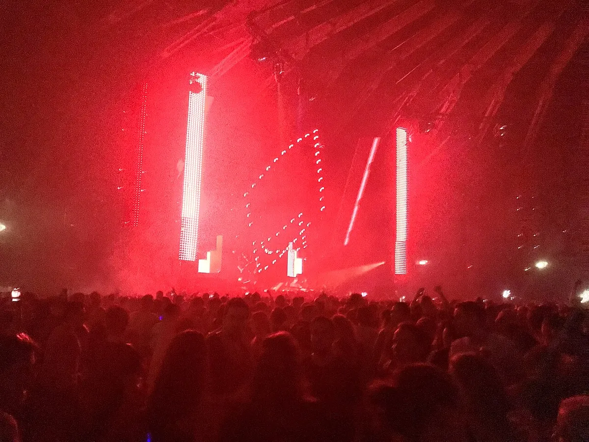

New Year's Eve
The best New Year's Eve festivals, 2026 into 2027
Two-night raves in American convention centres, summer camping festivals in New Zealand and Australia, and the clubs that own the night in Europe.
Summer in one hemisphere, winter in the other.
New Year's Eve lands in the middle of summer in the southern hemisphere and in the middle of winter in the northern one, and that decides what kind of NYE festivals exist where. In New Zealand and Australia it is camping season, so the new year gets multi-day outdoor festivals in vineyards and farmland. In the United States the big promoters move indoors, into convention centres, arenas and a baseball stadium, and run two-night raves. In Europe, where it is winter and the club culture is older, the night mostly belongs to clubs. This guide covers all three, with the dates for New Year's Eve 2026 where the festivals have announced them.
New Year's Eve 2026: the festivals and their dates.
| Festival | Where | New Year's Eve 2026 | Sound |
|---|---|---|---|
| Countdown NYE | NOS Events Center, San Bernardino, California | 31 December 2026 and 1 January 2027 | Insomniac's EDM, five covered stages |
| Decadence NYE | Colorado Convention Center, Denver, and Arizona | 30 and 31 December | EDM |
| HiJinx | Pennsylvania Convention Center, Philadelphia | 30 and 31 December 2026 | Bass music |
| CRSSD Proper NYE | Petco Park, San Diego | 31 December 2026, 3pm, to 1 January 2027, 10pm | House, with This Never Happened and Daisy Chain |
| Lights All Night | Dallas Market Hall, Texas | Check the site | EDM |
| Eternal NYE | Orlando, Florida | Check the site | Bass music |
| Awakenings NYE | Gashouder, Amsterdam | Check the site | Techno |
| Rhythm and Vines | Waiohika Estate, Gisborne, New Zealand | Check the site | Camping festival |
| Beyond the Valley | Near Melbourne, Australia | Check the site | Multi-day festival, several stages |
| Field Day | The Domain, Sydney | 1 January 2027 | Hip-hop, house, indie and electronic |
Dates marked "check the site" had not been announced when this guide was written in September 2026. Line-ups for most of these events are announced in the autumn.
NYE festivals in the United States.
Countdown NYE is Insomniac's New Year's Eve festival, from the promoter behind EDC Las Vegas. For New Year's Eve 2026 it goes back to the NOS Events Center in San Bernardino, California, after a year in downtown Los Angeles, and runs over two days, 31 December 2026 and 1 January 2027, with five covered stages and more than 75 artists. Insomniac also runs Forever Midnight in Los Angeles, a New Year's Eve event it started in 2023. The Countdown festival bills itself as an alien invasion for electronic music fans in Southern California.
Decadence NYE fills the Colorado Convention Center in Denver on 30 and 31 December, with a second edition in Arizona. It is produced by Global Dance and AEG Presents Rocky Mountains and has been running since at least 2011, when its lineup included BT and Flux Pavilion. HiJinx, founded in 2018, takes over the Pennsylvania Convention Center in Philadelphia on 30 and 31 December 2026 and leans towards bass music. Eternal NYE in Orlando is a bass music festival too, at the city's amphitheater.
CRSSD Proper NYE is the house-leaning option, at Petco Park, the baseball stadium in San Diego, from 3pm on 31 December to 10pm on 1 January, with takeovers from This Never Happened and Daisy Chain for the 2026 edition. Lights All Night, held at Dallas Market Hall, has run since 2010 and is often described as the longest-running EDM festival in Texas.
Smaller rooms do New Year's Eve too. The Concourse Project in Austin booked Tinlicker for New Year's Eve 2024, and filmed the set.
New Year's Eve in Europe: the clubs.

Europe has few New Year's Eve festivals in the American or Australian sense. It has clubs, and New Year's Eve is one of their biggest nights. The best-known European NYE event is Awakenings at the Gashouder in Amsterdam, a round 19th-century gasholder that the Dutch techno promoter has used since its first edition in 1997. Awakenings runs New Year's Eve nights there, and the photograph above is from 31 December 2017. Check the Awakenings site for the 2026 dates.
That is Adam Beyer and Joseph Capriati at Awakenings' New Year's Eve special on 31 December 2013, filmed by Awakenings in the Gashouder.
Elsewhere in Europe, the New Year's music festivals are mostly club weekends. Berlin, London, Barcelona and Prague all have clubs that run long New Year's Eve nights, and the best clubbing cities in Europe guide covers them. For the clubs in each city, see the guides to Berlin, Amsterdam and London.
Australia and New Zealand: New Year in summer.
Rhythm and Vines started in 2003 at Waiohika Estate, a vineyard near Gisborne on New Zealand's east coast, when three University of Otago friends, Hamish Pinkham, Tom Gibson and Andrew Witters, put on a New Year's party for about 1,800 people. Gisborne is the first city in the world to see the new year's sunrise, so Rhythm and Vines is the first festival to see it too. It is now one of the country's largest camping festivals. New Zealand also has Rhythm & Alps, in a mountain valley near Wānaka.
Beyond the Valley has run over New Year's Eve since 2014, first on Phillip Island and since then at sites east and west of Melbourne, as a multi-day festival with several stages. Field Day, in Sydney, is a one-day festival on New Year's Day itself, in The Domain park, with hip-hop, house, indie and electronic acts.
How to choose a New Year's Eve festival.
If you want the biggest production and a two-night rave, go to Countdown, Decadence or HiJinx. If you want house on New Year's Eve, CRSSD Proper NYE. If you want techno, go to Europe and pick a club, or Awakenings in Amsterdam. If you want New Year outdoors, in summer, with a tent, go to Rhythm and Vines or Beyond the Valley, and if you want to be among the first people in the world to see the new year, Rhythm and Vines is the only choice.
Some of them sell early: CRSSD put Proper NYE 26/27 on sale on 9 September 2026, almost four months before the night.
For the rest of the year, the Selector plays a set at random from all 62,824 in the catalogue behind this site, and the best electronic music festivals in Europe covers the summer.
New Year's Eve festivals FAQ.
What are the best New Year's Eve festivals?
For dance music: Countdown NYE, Decadence NYE, HiJinx and CRSSD Proper NYE in the United States, Rhythm and Vines in New Zealand, Beyond the Valley and Field Day in Australia, and Awakenings' New Year's Eve nights at the Gashouder in Amsterdam.
Which festival sees the new year first?
Rhythm and Vines, near Gisborne in New Zealand. Gisborne is the first city in the world to see the new year's sunrise, and the festival has celebrated there since 2003.
Are there New Year's Eve festivals in Europe?
A few, but New Year's Eve in Europe mostly belongs to clubs. Awakenings in Amsterdam is the best-known European NYE event for techno.
Is there a New Year's Eve festival in Amsterdam?
Awakenings runs New Year's Eve nights at the Gashouder, the round 19th-century gasholder where it has held events since 1997. Check the Awakenings site for the dates.
Where is Countdown NYE 2026?
At the NOS Events Center in San Bernardino, California, on 31 December 2026 and 1 January 2027.
Sources.
- Insomniac: Countdown NYE will expand to two days and return to NOS Event Center for 2026
- Countdown NYE
- Westword: Decadence NYE 2026 drops full Denver lineup
- Decadence NYE
- Resident Advisor: Decadence New Years Eve, Colorado Convention Center, 2011
- HiJinx Festival
- CRSSD Proper NYE
- Petco Park Insider: CRSSD Proper NYE 2026 / NYD 2027
- D Magazine: Ten Years In, Lights All Night Endures
- Eternal NYE
- Wikipedia: Awakenings (festival)
- NZ Herald: Rhythm and Vines over the years
- Wikipedia: Rhythm & Vines
- Outlook Traveller: New Year's Eve festivals across New Zealand
- Wikipedia: Beyond the Valley
- Jones Around the World: The 12 Best New Years Eve Music Festivals in Australia
- Mixes DB: Tinlicker at The Concourse Project, Austin, 31 December 2024
Continue reading
Read next.
 Festivals~13 min read
Festivals~13 min readBest Electronic Music Festivals in Europe 2027, Compared
Fourteen major festivals and seven smaller ones, from Tomorrowland to Garbicz, compared by sound, scale, setting and 2027 dates.
Read article → Digging~14 min read
Digging~14 min readBest Boiler Room Sets of All Time, Ranked and Measured
Eighteen sets picked for what happens in them, beside the ten most-watched, counted across 8,206 Boiler Room recordings.
Read article → Festivals~13 min read
Festivals~13 min readWhat Is Burning Man? The Event, the City and the Music
A participant-built city in the Nevada desert, with no central lineup or main stage, and the sound camps and art cars that programme their own music.
Read article → Rave spots~10 min read
Rave spots~10 min readBest Clubs in Berlin: The Legends and the Ones Still Open
The rooms that made Berlin a techno city, the famous clubs that closed, and the best clubs in Berlin that are still open.
Read article →